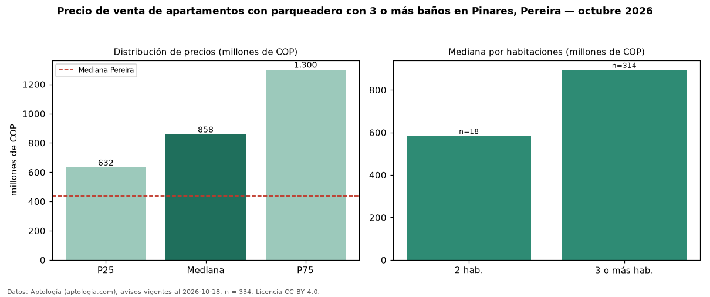

Precio de venta de apartamentos con parqueadero con 3 o más baños en Pinares, Pereira — octubre 2026
Con 334 avisos vigentes, el precio mediano de apartamentos con parqueadero con 3 o más baños en venta en Pinares, Pereira es COP 858 millones. Frente a la mediana de los apartamentos con parqueadero en venta de Pinares (COP 650 millones, n = 661), queda 32 % por encima; este segmento reúne el 51 % de esos avisos. Por metro cuadrado, la mediana es COP 5,45 millones/m² (n = 331), 6 % por debajo de los apartamentos con parqueadero en venta de Pinares (COP 5,81 millones/m²). El área mediana anunciada es 165 m². El segmento con más oferta es el de 3 o más habitaciones (314 avisos, mediana COP 895 millones); pasar de 2 habitaciones a 3 o más habitaciones cambia la mediana +53 %. La administración mediana declarada es COP 790.000 al mes (n = 235). La mitad central de los avisos va de COP 632 millones a COP 1,30 mil millones (razón 2,1), una dispersión alta. El estrato más frecuente es 6 (88 % de los avisos con estrato). Datos: Aptología (aptologia.com), CC BY 4.0 — https://www.aptologia.com/venta/pereira/pinares. Archivos: PDF, CSV con las cifras y gráfica PNG.

| Avisos únicos | 334 |
|---|---|
| Percentil 25 | COP 632.500.000 |
| Mediana | COP 857.946.829 |
| Percentil 75 | COP 1.300.000.000 |
| Mediana por m² | COP 5.454.545 |
Fuente: avisos vigentes de portales inmobiliarios recopilados por Aptología, deduplicados (mínimo 30 avisos únicos por celda). Precios pedidos, no cerrados. Fecha: 2026-10-18.